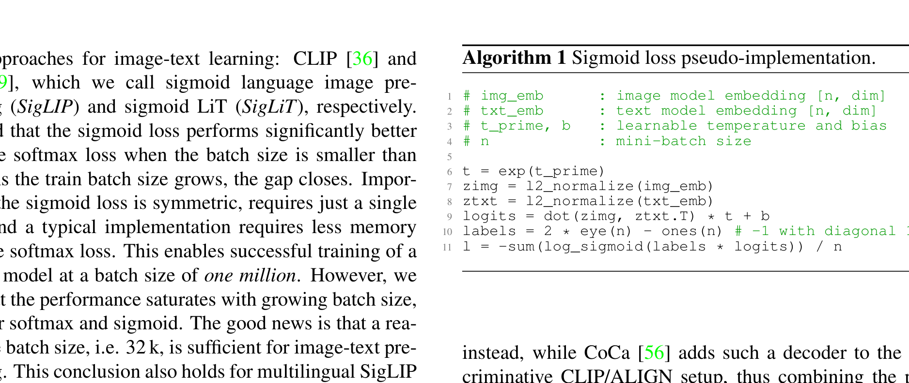
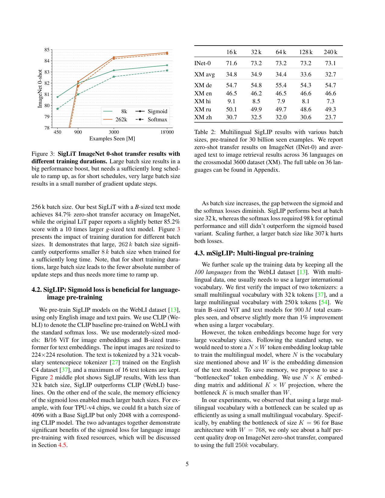
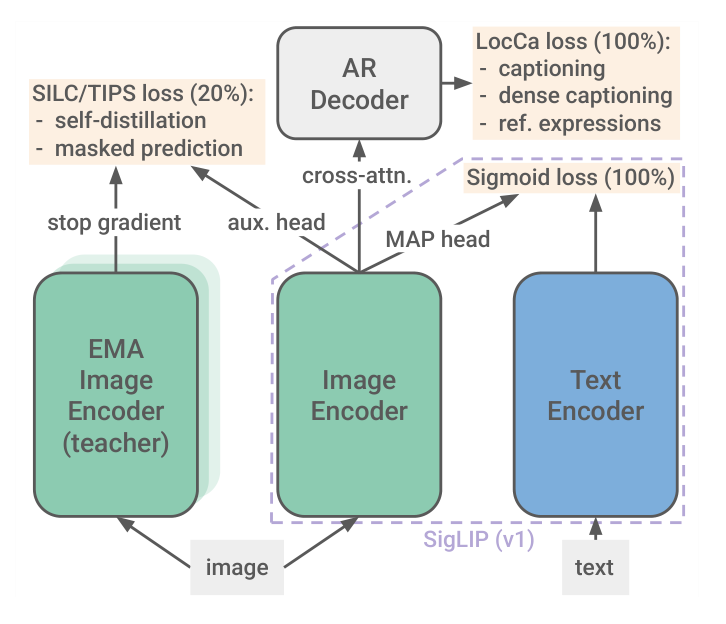
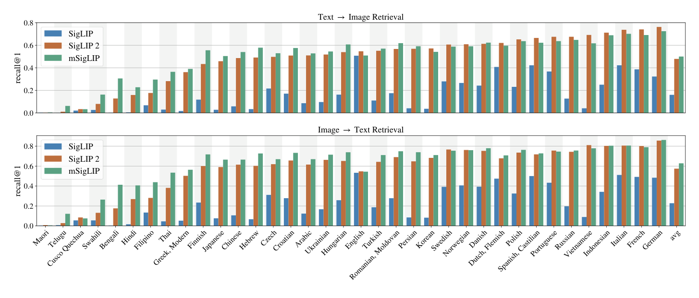

SigLIP
SigLIP¶
本笔记涵盖 SigLIP → SigLIP-2 的演进历程。
| 版本 | 论文 | 时间 | 核心变化 |
|---|---|---|---|
| SigLIP | arXiv:2303.15343 | 2023.03 | Sigmoid loss 替代 Softmax，更高效的对比学习 |
| SigLIP 2 | arXiv:2502.14786 | 2025.02 | 统一训练配方（LocCa + 自蒸馏 + masked prediction）+ 多语言 + 多分辨率 |
TL;DR（面试版）🚗🚗🚗🚗🚗
SigLIP 把 CLIP 的 Softmax 对比损失换成了 Sigmoid 二分类损失。
核心区别是：
Softmax 的分母要对整个 batch 求和，算任何一个样本的 loss 都必须先拿到所有样本的 embedding，所以必须先 all-gather 构建完整的 \(n \times n\) 相似度矩阵，峰值内存 \(O(n^2)\)。
Sigmoid 把每对 image-text 当作独立的二分类，算第 3 和第 7 对的 loss 不需要知道第 1 和第 2 对算出来多少，所以可以分块处理——每次只交换一小块 embedding，算完累积梯度再换下一块，峰值内存降到 \(O(b^2)\)。
- 另外，Softmax 在小 batch 时负样本太少导致归一化不稳定，而 Sigmoid 每对独立计算不受 batch 大小影响，实验表明 32K 的 batch size 就已经足够好。
一句话：Sigmoid 解耦了损失计算和 batch 大小，换来更低的内存、更灵活的分布式实现、以及更稳定的小 batch 训练。
符号说明：\(n\) = 全局 batch size（如 32K），\(D\) = 设备数量，\(b = n / D\) = 每个设备的本地 batch 大小。\(O(n^2)\) 是完整相似度矩阵的内存，\(O(b^2)\) 是分块后每次只需持有的内存——比如 32K 分到 4 个设备，每块 8K × 8K，内存是前者的 \(\frac{1}{16}\)。
第一部分：SigLIP - Sigmoid Loss for Language Image Pre-Training¶
📄 论文链接：arXiv:2303.15343 | PDF
作者：Xiaohua Zhai, Basil Mustafa, Alexander Kolesnikov, Lucas Beyer (Google DeepMind)
发表：2023 年 3 月
目录¶
核心要点¶
- 用 Sigmoid loss 替代 Softmax loss：不再需要在整个 batch 上做全局归一化，每对 image-text 独立计算损失，大幅简化了分布式训练的实现
- 解耦 batch size 与损失定义：Softmax 的归一化依赖于 batch size，而 Sigmoid 不需要全局视图，使得可以使用更大或更小的 batch size
- 训练效率大幅提升：结合 Locked-image Tuning (LiT)，仅用 4 块 TPUv4 芯片在 2 天内训练出 84.5% ImageNet zero-shot 准确率的模型
- 内存效率更高：不需要存储和计算 |B| × |B| 的相似度矩阵，降低了显存占用
- 探索了极端 batch size：将 batch size 推到 100 万，发现收益很快饱和，32K 的 batch size 已经足够

SigLIP vs CLIP：Sigmoid loss 不需要全局归一化，每对 image-text 独立计算损失1. 背景与动机¶
1.1 CLIP 的 Softmax Loss🚗¶
CLIP 使用基于 Softmax 的对比损失（InfoNCE）：
给定一个 batch 的图像-文本对，先对各自的 embedding 做 L2 归一化——将向量除以自身的 L2 范数，使其长度变为 1：
归一化后，两个向量的点积等于余弦相似度（\(\hat{x} \cdot \hat{y} = \cos\theta\)），值域固定在 \([-1, 1]\)，只衡量方向上的相似程度，不受向量绝对大小的影响。这样比较不同模态的 embedding 才有意义——否则图像向量的模长可能远大于文本向量，点积会被模长主导。归一化后的相似度记为 \(s_{ij}\)。Softmax 的基本公式为：
以 image→text 方向的对比损失为例：
分母的 \(\sum_j\) 需要遍历整个 batch（全局归一化），text→image 方向同理，最终 loss 取两者均值。
问题： 1. 全局归一化开销大：需要 all-gather 所有设备的 embeddings，通信成本高 2. 内存占用高：需要存储 |B| × |B| 的相似度矩阵 3. Batch size 受限：全局归一化使得 batch size 不能太大（受限于显存） 4. 数值稳定性：Softmax 需要减去最大值，需要额外的 pass
1.2 SigLIP 的核心洞察¶
关键问题：对比学习真的需要全局归一化吗？
答案：不需要。可以将问题转化为独立的二分类——每对 (image, text) 独立判断是否匹配（正样本 = 1，负样本 = -1）。
2. 方法¶
2.1 Sigmoid Loss🚗¶
将对比学习转化为标准的二分类问题——每对 \((i, j)\) 独立判断是否匹配（\(i = j\) 时标签 \(\ell_{ij} = +1\)，否则 \(\ell_{ij} = -1\)）。Sigmoid 的基本公式为：
图像和文本嵌入均 L2 归一化（同 1.1，使点积等于余弦相似度），损失函数为：
其中 \(s_{ij} = x_i \cdot y_j\) 为归一化后的相似度，\(t\)（温度）和 \(b\)（偏置）均为可学习参数。每对独立计算，无需全局归一化。
伪代码实现：
# Sigmoid loss pseudo-implementation
t = exp(t_prime) # learnable temperature
z_img = l2_normalize(img_emb) # [n, dim]
z_txt = l2_normalize(txt_emb) # [n, dim]
logits = dot(z_img, z_txt.T) * t + b # [n, n]
labels = 2 * eye(n) - ones(n) # -1 with diagonal 1
loss = -sum(log_sigmoid(labels * logits)) / n
2.2 为什么 Sigmoid Loss 更好？¶
两种 loss 在分布式训练中都需要跨设备交换 embeddings 来计算所有 pair 的损失——这一点没有区别。差异在于损失公式本身的结构以及由此带来的内存效率：
Softmax——公式的分母耦合整个 batch：
算 \(\ell_i\) 时，分母必须遍历 batch 里所有 \(j\)。这意味着： - 必须先 all-gather 全部 embeddings，构建完整的 \(n \times n\) 相似度矩阵 - 然后才能算任何一个样本的 loss - 峰值内存 \(O(n^2)\)——batch 越大，内存越紧张
Sigmoid——每对 loss 独立，天然可拆分：
算 \(\ell_{3,7}\) 不需要知道 \(\ell_{1,2}\) 或任何其他 pair。这带来的好处不是"不用通信"，而是可以分块处理（chunked）：
| Softmax (CLIP) | Sigmoid (SigLIP) | |
|---|---|---|
| 公式结构 | 分母耦合整个 batch | 每对独立 |
| 跨设备通信 | 需要 | 需要 |
| 峰值内存 | \(O(n^2)\)（完整相似度矩阵） | \(O(b^2)\)（每次只持有一个 chunk） |
| 计算方式 | 先 all-gather 全部 → 再算 loss | 分块：算一块 → 累积梯度 → 换下一块 |
| 数值稳定性 | 需要减去最大值 | 直接计算 |
| 小 batch | 负样本少，归一化不稳定 | 每对独立，不受影响 |
2.3 高效的 "Chunked" 实现🚗¶
论文（Section 3.3）描述了 Sigmoid loss 的分块计算方式。以 \(D\) 个设备为例，每个设备持有本地 batch（大小 \(b = n / D\)）：
步骤：
1. Device 1 持有 images [i₁...i_b]，与本地 texts [t₁...t_b] 算 b×b 块 → 累积 loss 和梯度
2. 将 texts 轮换到下一个设备的 chunk → 再算 b×b 块 → 累积
3. 重复 D 轮，直到每个 image 都与所有 text 配对过
关键：任何时刻内存中只有一个 b×b 小块，峰值内存 O(b²)
对比 Softmax：
- 必须 all-gather 全部 n 个 text embeddings → 构建 n×n 矩阵 → 才能开始算 loss
- 峰值内存 O(n²)，无法分块
这种分块方式使 SigLIP 能使用更大的 batch size 而不 OOM，也让小 batch 训练更稳定。
2.4 可学习参数的初始化¶
Sigmoid loss 引入了两个可学习参数：
# 初始化策略
t_prime = log(10) # temperature, 初始 t ≈ 10
b = -10 # bias, 初始化为负值
# 为什么这样初始化？
# - 初始时负样本远多于正样本（1:(n-1) 的比例）
# - 负的 bias 可以抵消这种不平衡
# - 避免训练初期的大幅梯度更新
2.5 网络结构¶
SigLIP 沿用了 CLIP 的双塔架构：
┌─────────────────┐ ┌─────────────────┐
│ Image Encoder │ │ Text Encoder │
│ (ViT-B/16) │ │ (Transformer) │
└────────┬────────┘ └────────┬────────┘
│ │
img_emb [n, dim] txt_emb [n, dim]
│ │
└──────────┬───────────┘
│
Sigmoid Loss
(per-pair binary classification)
关键区别： - 损失函数从 Softmax 改为 Sigmoid - 其他部分（ViT、Transformer encoder）保持不变
2.6 与 LiT 结合（SigLiT）¶
LiT (Locked-image Tuning) 的核心思想： - 冻结预训练的图像编码器（如 ImageNet 预训练的 ViT） - 只训练文本编码器和投影层
SigLiT = SigLIP + LiT： - 使用 Sigmoid loss - 冻结图像编码器 - 训练更快，4 块 TPUv4 芯片 2 天达到 84.5% ImageNet zero-shot
3. Batch Size 的影响¶
3.1 极端 Batch Size 实验¶
SigLIP 探索了从 32K 到 1M 的 batch size：
发现：
- 32K batch size 已经足够好
- 继续增大到 100 万，收益快速饱和
- 更大的 batch size 主要增加计算成本，性能提升有限
结论：32K 是一个合理的 "sweet spot"

Figure 3: SigLiT ImageNet 零样本迁移结果。对比 8k 与 262k batch size、Sigmoid 与 Softmax loss 在不同训练时长（examples seen）下的表现：大 batch size 带来大幅性能提升，但需要更长的 schedule 才能爬升；极大 batch size 的梯度更新步长很小3.2 小 Batch Size 的优势¶
意外发现：Sigmoid loss 在小 batch size 下比 Softmax 更好
原因分析：
- Softmax 在小 batch 时负样本太少，归一化不稳定
- Sigmoid 每对独立计算，不受 batch size 影响
- 小 batch 时 Sigmoid 的梯度信号更稳定
4. SigLIP 总结¶
4.1 核心贡献¶
- Sigmoid loss 替代 Softmax：更简单、更高效、更灵活
- 解耦 batch size 与损失定义：不再受全局归一化限制
- 训练效率大幅提升：SigLiT 4 芯片 2 天达到 84.5%
- 内存效率更高：chunked 实现只需 O(b²) 内存
- 探索了极端 batch size：证明 32K 已经足够
4.2 与 CLIP 的对比¶
| 维度 | CLIP | SigLIP |
|---|---|---|
| 损失函数 | Softmax (InfoNCE) | Sigmoid |
| 归一化 | 全局（all-gather） | 无（per-pair） |
| Batch size | 受限 | 灵活 |
| 训练效率 | 较低 | 更高 |
| 内存占用 | O(B²) | O(b²) |
| 分布式训练 | 复杂 | 简单 |
| 性能 | baseline | 略优或相当 |
4.3 影响¶
- SigLIP 成为 Google 后续多模态模型的标准图像编码器（如 PaliGemma）
- 证明了简化损失函数的有效性
- 为更高效的对比学习提供了新思路
第二部分：SigLIP 2 - Multilingual Vision-Language Encoders with Improved Semantic Understanding, Localization, and Dense Features¶
📄 论文链接：arXiv:2502.14786 | PDF
作者：Michael Tschannen, Alexey Gritsenko, Xiao Wang, Muhammad Ferjad Naeem, Ibrahim Alabdulmohsin, Nikhil Parthasarathy, Talfan Evans, Lucas Beyer, Ye Xia, Basil Mustafa, Olivier Hénaff, Jeremiah Harmsen, Andreas Steiner, Xiaohua Zhai (Google DeepMind)
发布：2025 年 2 月
核心要点¶
- 统一训练配方：在 SigLIP 基础上，将多种独立发展的技术整合进统一配方——captioning-based pretraining (LocCa)、self-supervised losses (self-distillation, masked prediction)、online data curation
- 全面超越 SigLIP：在所有模型规模上，零样本分类、图文检索、以及作为 VLM 视觉编码器的迁移性能均优于 SigLIP
- 定位与密集预测显著提升：新训练配方在 localization 和 dense prediction 任务上带来显著改进
- 多语言与公平性：基于更多样化、带去偏技术的数据混合，实现更好的多语言理解与公平性
- 多分辨率变体 NaFlex：支持保持原生宽高比、可变序列长度/分辨率的单一 checkpoint 变体
- 四种尺寸开源：ViT-B (86M)、L (303M)、So400m (400M)、g (1B)

Figure 1: SigLIP 2 在 SigLIP (v1) 基础上加入 LocCa loss（captioning、dense captioning、ref. expressions）、SILC/TIPS loss（self-distillation、masked prediction）与 Sigmoid loss，组成统一训练配方⚠️ 重要说明：架构无变化
论文原文明确指出："SigLIP 2 is designed to be backward compatible with SigLIP by relying on the same architecture. This allows existing users to simply swap out the model weights and tokenizer (which is now multilingual) to get improvements on a wide range of tasks."
SigLIP-2 与 SigLIP-1 的网络结构完全相同： - 图像编码器：ViT（相同） - 文本编码器：Transformer（相同） - 损失函数：Sigmoid loss（相同）
改进全部来自训练配方： - 多目标训练（对比 + Captioning + 自蒸馏 + 掩码预测） - 多语言数据（训练数据覆盖 109 种语言） - 更好的数据策划和去偏技术
向后兼容：可以直接替换权重和 tokenizer 使用，无需修改代码。
1. 背景与动机¶
1.1 SigLIP 之后的发展¶
在 CLIP、ALIGN 开创的对比图文嵌入模型取得成功后，多项改进被提出：对图像重新 caption、加入 image-only 自监督损失、用小型 decoder 做辅助任务（captioning、localization）等。但这些开源模型都相对接近 CLIP 原始方法，未将各类最新改进整合进单一模型。
1.2 SigLIP 2 的目标¶
在 SigLIP 训练配方基础上，整合先前工作的多项改进，发布一个新的开源模型家族，使其在 CLIP 核心能力（零样本分类、检索）上表现更强，同时提升 localization 和 dense prediction 能力，并改进多语言理解与公平性。
2. 方法：SigLIP 2 训练配方¶
论文 §2 把训练配方分为 5 个阶段/模块：基础设置、Sigmoid+LocCa、自蒸馏+掩码预测、多分辨率适配、小模型主动数据蒸馏。网络结构与 SigLIP 1 完全相同，所有改进都来自训练配方。
2.1 基础设置（§2.1）¶
| 设置 | 内容 |
|---|---|
| 架构 | 与 SigLIP 1 相同：ViT 图像编码器 + Transformer 文本编码器 |
| 池化头 | MAP head（Multi-head Attention Pooling）[69] |
| Tokenizer | 多语言 Gemma tokenizer，词表 256k，文本转小写，最大长度 64 |
| 训练数据 | WebLI：100 亿图像、120 亿 alt-text，覆盖 109 种语言 |
| 语言比例 | 90% 英文网页图文对 + 10% 非英文 |
| 数据去偏 | 采用 [2] 的过滤技术，缓解敏感属性上的偏见 |
| 优化器 | Adam，学习率 \(10^{-3}\)，解耦 weight decay \(10^{-4}\)，梯度裁剪到范数 1 |
| Batch size | 32K |
| 训练计划 | Cosine schedule，20K warmup，共训练 40B 个样本 |
| 分布式 | FSDP，最多 2048 块 TPUv5e |

SigLIP-2 的多语言训练数据分布2.2 Sigmoid Loss + LocCa（§2.2）¶
这是训练前半段（0%–80%）的两个核心损失，权重均为 100%。
（1）Sigmoid loss（来自 SigLIP 1）
与 CLIP 的 Softmax 对比不同，SigLIP 把 image-text 匹配变成 batch 内每对独立的二分类：
无需全局归一化，可用 chunked 实现降低显存。
（2）LocCa loss（decoder-based pretraining）
一句话：LocCa = Localized Captioning，是一种让视觉编码器通过生成图像描述和预测 bbox 来学习定位、OCR 和细粒度理解的 decoder-based 预训练目标。
在视觉编码器未池化的特征上接一个带 cross-attention 的 Transformer decoder：
- Decoder 层数是文本编码器的一半
- 同时训练三个任务：
- Image captioning：图像 → 文本描述
- Dense captioning / grounded captioning：给定 bbox 生成区域描述
- Referring expression prediction：根据描述预测目标 bbox
- Captioning 任务 50% 概率使用并行预测（非因果 mask，所有 token 同时从 mask token 预测）
- 为降低大词表显存开销，实现 chunked decoder loss
注意：decoder 只用于表征学习，不随模型发布。
什么是 AR Decoder？¶
论文 Figure 1 中标注的 AR Decoder 即 Autoregressive Decoder（自回归解码器），是 Transformer Decoder 的经典工作方式：每次只预测一个 token，下一个 token 依赖前面已生成的所有 token。
核心机制：
- 因果注意力掩码（Causal Mask）：预测第 \(t\) 个 token 时，只能看到位置 \(1, 2, \ldots, t-1\)，看不到 \(t\) 及之后
- 逐 token 生成：输入
<BOS>，依次生成token1, token2, ..., <EOS> - Cross-attention 到图像特征：Decoder 每层通过 cross-attention 读取视觉编码器的未池化特征
标准结构（单层）：
输入: 已生成 token + 位置编码
↓
Masked Multi-Head Self-Attention ← 因果掩码
↓
Layer Norm + Residual
↓
Cross-Attention → attend 到图像编码器输出（ViT 未池化特征）
↓
Layer Norm + Residual
↓
Feed-Forward Network (FFN)
↓
Layer Norm + Residual
↓
输出到下一层 / 最终词表投影
这样的层堆叠 N 次，最后接一个 Linear(d_model, vocab_size) + Softmax，得到下一个 token 的概率分布。
什么是并行预测（Parallel Prediction）？¶
与 AR 相对，并行预测把要生成的所有 token 先换成 [MASK]，然后一次性同时预测出来，没有因果掩码。
图像 → ViT → 未池化特征
↓
caption: "[MASK] [MASK] [MASK] [MASK]"
↓
一次前向传播同时预测： "一只橘猫坐在沙发上"
与 AR Decoder 的对比：
| 方式 | 注意力掩码 | 预测方式 | 典型模型 |
|---|---|---|---|
| AR Decoder | 因果掩码 | 逐个 token 自回归生成 | GPT、T5 decoder、标准 LocCa captioning |
| 并行预测 | 非因果 | 所有 token 同时从 mask token 预测 | BERT、MAE、LocCa captioning（50% 概率） |
在 SigLIP 2 的 LocCa 中，captioning 任务一半时间用 AR Decoder，一半时间用并行预测。
本质区别：因果 vs 非因果¶
AR Decoder 与并行预测的核心差异只有一点：self-attention 的掩码方式不同。
| AR Decoder | 并行预测 | |
|---|---|---|
| 注意力掩码 | 因果掩码 | 非因果 / 双向 |
| 输入 | 已生成的 token | 全部 [MASK] |
| 输出 | 一次预测 1 个 token | 一次预测全部 token |
| 依赖关系 | 后一个 token 依赖前一个 | 所有 token 同时独立预测 |
在 LocCa 里，两者都接同一个图像编码器、都可能有 cross-attention，区别只在 decoder self-attention 是否带因果掩码。
与 KV Cache 的关系¶
KV Cache 主要是为 AR 模型推理设计的，并行预测模型一般不需要。
AR 生成时每次只输出 1 个 token，但下一步又要把前面所有 token 重新过一遍：
第 1 步: [BOS] → 生成 token1
第 2 步: [BOS, token1] → 生成 token2
第 3 步: [BOS, token1, token2] → 生成 token3
为避免重复计算历史 token 的 Key 和 Value，AR 模型会把它们缓存起来：
下一步只算新 token 的 Q，再和缓存里的 K/V 做 attention。
并行预测是一次性同时预测所有 token，不存在逐步扩展序列的过程，所以不需要 KV Cache。
| 模型类型 | 典型代表 | 是否需要 KV Cache |
|---|---|---|
| Decoder-only AR | GPT、LLaMA、Qwen | ✅ 必需 |
| Encoder-decoder AR | T5、LocCa AR Decoder | ✅ Decoder 侧需要 |
| Encoder-only 双向 | BERT、ViT | ❌ 不需要 |
| 并行预测生成 | MAE、LocCa 并行预测 | ❌ 不需要 |
AR Decoder 在 SigLIP 2 中的作用¶
一句话：AR Decoder 是预训练阶段的辅助任务头，用来提升图像编码器的细粒度理解、OCR 和定位能力；训练完成后被丢弃，发布的 SigLIP 2 仍然是纯双塔编码器。
为什么双塔编码器还需要 AR Decoder？
SigLIP 2 的 Sigmoid 对比损失只学习全局 image-text 匹配。比如一张「猫坐在蓝色沙发上」的图，对比学习能学会这张图和「猫」「沙发」相关，但不一定能精确定位猫在哪里、沙发是什么颜色。
AR Decoder 通过 LocCa loss 强迫模型逐 token 生成详细描述：
图像 → ViT → 未池化特征 → AR Decoder → "一只橘猫坐在蓝色沙发上..."
为了生成连贯描述，模型必须学会： - 物体细节：颜色、形状、动作 - 空间关系：「在……上面」「左边」「右边」 - 图中文字：OCR 能力
带来的具体收益（论文 §2.2 / Abstract）：
| 能力 | 原因 |
|---|---|
| Localization | 描述中要提到物体位置，迫使编码器关注空间信息 |
| Dense prediction | Decoder 读取未池化的 patch 特征，保留局部细节 |
| OCR | 描述图中文字时，编码器必须学会识别文字 |
| 细粒度理解 | 自回归生成要求理解物体属性、关系和场景 |
最关键：AR Decoder 不发布
论文原文："Finally, we note that the decoder only serves for representation learning here and is not part of the model release."
- 预训练时：图像编码器 + 文本编码器 + AR Decoder 一起训练
- 推理/发布时：只有图像编码器 + 文本编码器
- 用户拿到的 checkpoint 仍然是纯双塔编码器
Sigmoid 对比 vs AR Decoder 的对比：
| Sigmoid 对比损失 | AR Decoder（LocCa） | |
|---|---|---|
| 任务 | 判断 image-text 是否匹配 | 生成图像的详细描述 |
| 粒度 | 全局 | 局部 + 细粒度 |
| 训练目标 | 二分类 | 自回归生成 |
| 是否发布 | 是（核心损失） | 否（仅预训练辅助） |
| 提升方向 | 跨模态对齐 | OCR、定位、密集特征 |
2.3 Self-Distillation + Masked Prediction（§2.3）❓🚗¶
在训练完成 80% 时加入，参考 SILC [45] 和 TIPS [38]，用于提升未池化特征（dense features）的局部语义，利好分割、深度估计等密集预测任务。
（1）EMA 动量教师🚗
教师参数是学生参数的指数滑动平均（EMA）：
这就是 SigLIP 2 中的 momentum encoder。它只在 self-distillation / masked prediction 阶段使用，SigLIP 1 没有这一机制。
注意：这是 DINO 式自蒸馏路线，不是 MoCo 式对比学习路线🚗
- MoCo：动量编码器维护一个负样本队列，损失是 InfoNCE 对比损失，核心是“拉正推负”。
- DINO / SigLIP 2：动量编码器作为 teacher，student 去预测 teacher 的输出，没有显式负样本队列，核心是“学生模仿稳定教师”。
SigLIP 2 只借用了 MoCo 的 EMA 更新机制，但训练目标属于 DINO 路线的 self-distillation。
（2）Local-to-global consistency loss
- 学生网络看图像的局部裁剪视图（8 个局部 view）
- 教师网络看完整图像（1 个全局 view）
- 通过一个单独的 MLP head，把学生的局部特征映射到与教师全局特征一致的高维空间
（3）Masked prediction
- 学生输入中 50% 的 image patch 被替换为 mask token
- 学生预测被 mask 位置上的教师特征
- 教师和学生看同一个全局视图（仅学生端有 mask）
（4）损失权重
两项基础权重为 1 : 0.25，再按模型尺寸缩放：
| 模型 | Local-to-global | Masked prediction |
|---|---|---|
| B | 0.25 | 0.0625 |
| L | 0.5 | 0.125 |
| So400m | 1.0 | 0.25 |
| g | 0.5 | 0.125 |
计算方式：先令 local-to-global 权重为 1、masked prediction 为 0.25，再整体乘以模型尺寸因子 0.25/0.5/1.0/0.5。
2.4 多分辨率适配（§2.4）¶
（1）固定分辨率变体
- 在训练 95% 处 resume
- Resize 位置嵌入到目标序列长度
- 必要时用 pseudoinverse (PI)-resize 把 patch embedding 从 patch size 16 改为 14
- 在目标分辨率下用所有损失继续训练
（2）NaFlex：可变宽高比 + 可变分辨率
结合 FlexiViT [6] 和 NaViT [12]：
- 单一 checkpoint 支持多种序列长度 {128, 256, 576, 784, 1024}
- 保持输入图像的原生宽高比
- 预处理时把图像 resize 到 patch size 的整数倍，序列长度不超过目标值
- 对位置嵌入做双线性 resize（含抗锯齿）到目标非方形 patch grid
- 从 90% checkpoint 开始切换为保持宽高比的 resize，最后 10% 训练计划拉伸 3.75 倍
- 为控制复杂度，不应用 self-distillation 和 masked prediction
2.5 小模型蒸馏：Distillation via Active Data Curation（§2.5）¶
针对最小两个固定分辨率模型 ViT-B/16 和 ViT-B/32，用主动数据策划做隐性蒸馏。
教师模型： - SigLIP 2 So400m 在高质量 curated 数据上额外微调 1B 样本
学生训练设置： - 学习率降到 \(10^{-5}\) - 去掉 weight decay - 额外训练 4B 样本 - 只使用 Sigmoid image-text loss
ACID 方法： - 每步用教师和学生共同给样本打 "learnability" 分数 - 从 64k 的 super-batch 中选出 32k 最优 batch（filtering ratio 0.5） - B/32 用更高的 filtering ratio 0.75
这本质上是通过筛选数据实现隐性蒸馏，而不是直接用 KL / softmax 蒸馏。
3. 网络结构¶
3.1 整体架构¶
┌─────────────────────────────────────────┐
│ SigLIP-2 │
├─────────────────────────────────────────┤
│ │
│ ┌───────────────┐ ┌───────────────┐ │
│ │ Image Encoder │ │ Text Encoder │ │
│ │ (ViT) │ │ (Transformer) │ │
│ └───────┬───────┘ └───────┬───────┘ │
│ │ │ │
│ └────────┬─────────┘ │
│ │ │
│ ┌─────────┴─────────┐ │
│ │ Multi-Objective │ │
│ │ Training │ │
│ └─────────┬─────────┘ │
│ │ │
│ ┌──────────────┼──────────────┐ │
│ │ │ │ │
│ ▼ ▼ ▼ │
│ Contrastive Captioning Self-Sup │
│ Loss Loss Loss │
└─────────────────────────────────────────┘
3.2 模型尺寸¶
论文开源四种尺寸（参数量来自论文 Abstract）：
| 模型 | 参数量 | 用途 |
|---|---|---|
| SigLIP-2-B/16 | 86M | 轻量级应用 |
| SigLIP-2-L/16 | 303M | 平衡性能与效率 |
| SigLIP-2-So400m/16 | 400M | 高性能应用 |
| SigLIP-2-g/16 | 1B | 最大规模 |
注：论文还训练了 B/32 以及不同分辨率（224/256/384/512）的变体。
4. SigLIP-2 总结¶
4.1 核心贡献¶
- 多语言扩展：训练数据覆盖 109 种语言，评估覆盖 36 种语言（XM3600）
- 统一训练配方：Sigmoid 对比 + LocCa captioning/localization + 自蒸馏 + 掩码预测
- 更强的密集特征：自蒸馏与掩码预测显著提升 localization 和 dense prediction 任务
- 小模型数据蒸馏：对 B/16、B/32 使用 ACID 主动数据策划，实现隐性蒸馏
- 多分辨率与原生宽高比：固定分辨率变体 + NaFlex 可变分辨率/可变长宽比变体
- 开源权重：提供 B/L/So400m/g 四个尺寸的预训练模型
4.2 与 SigLIP 的对比¶
| 维度 | SigLIP | SigLIP-2 |
|---|---|---|
| 语言覆盖 | 英语为主 | 109 种语言训练数据 |
| 训练目标 | Sigmoid 对比学习 | Sigmoid + LocCa + 自蒸馏 + 掩码预测 |
| 动量编码器 | 无 | 有（EMA 教师，用于自蒸馏） |
| 小模型优化 | 无 | ACID 主动数据蒸馏 |
| 多分辨率 | 固定分辨率 | 固定分辨率 + NaFlex |
| 鲁棒性 | baseline | 更强 |
| 生成能力 | 无 | 训练时使用 LocCa decoder（不发布） |
4.3 与其他多语言模型的对比¶
| 模型 | 语言数 | 视觉 | 生成 | 开源 |
|---|---|---|---|---|
| SigLIP-2 | 30+ | ✅ | ✅ | ✅ |
| CLIP | ~10 | ✅ | ❌ | ✅ |
| ALIGN | ~100 | ✅ | ❌ | ❌ |
| Florence | ~100 | ✅ | ✅ | ❌ |
| CogVLM | 中英 | ✅ | ✅ | ✅ |
总结与对比¶
两代方法对比¶
| 维度 | SigLIP (2023) | SigLIP-2 (2025) |
|---|---|---|
| 时间 | 2023.03 | 2025.02 |
| 核心创新 | Sigmoid loss | 统一训练配方：多语言 + 多目标 + 自蒸馏 + 掩码预测 |
| 语言覆盖 | 英语为主 | 训练数据覆盖 109 种语言，评估覆盖 36 种语言（XM3600） |
| 训练目标 | 对比学习 | 对比 + Captioning + 自蒸馏 + 掩码预测 |
| 小模型优化 | 无 | ACID 主动数据蒸馏（针对 B/16、B/32） |
| 生成能力 | 无 | 有（训练时用 LocCa decoder，但 decoder 不发布） |
| 鲁棒性 | baseline | 更强 |
| 开源 | ✅ | ✅ |
关键技术洞察¶
-
简化损失函数是有效的：Sigmoid loss 替代 Softmax，更简单、更高效、更灵活
-
全局归一化不是必需的：对比学习不需要在整个 batch 上做归一化，每对独立计算即可
-
多目标训练提升表征质量：对比学习 + 生成 + 自监督，多管齐下
-
多语言是趋势：覆盖更多语言，服务更多用户
-
小模型优化需要数据蒸馏：SigLIP 2 对 B/16、B/32 使用 ACID 主动数据蒸馏，而非 task-specific adapter
-
开源推动社区发展：SigLIP 系列全部开源，被广泛采用
演进脉络¶
CLIP (2021)
↓ 简化：Softmax → Sigmoid
SigLIP (2023.03)
↓ 扩展：多语言 + 多目标 + 自蒸馏 + 掩码预测
SigLIP-2 (2025.02)
SigLIP 系列展示了从"简化损失函数"到"全面多语言能力"的演进路径，是 Google 多模态研究的重要组成部分，也是 PaliGemma 等后续模型的基石。